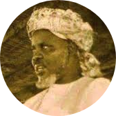

|  |
Eternal lover of TahaCheikh Ibrahim NiasseLa Solution Baye Niasse (1900-1975) is a Muslim . Sharia is the most hard field to harvest but He did it ,and so,beautifully. |
| Dates | Facts | Books |
|---|---|---|
| 1900-1975 | Born in 1900 in Taiba Niassene, Passed away in 1975 in London | Sayrul Qalbi |
| 1937 | Invited to Kano by the king | |
| 1937 | 1sr Trip to Mecca |
| Teaching 🌙🌙🌙🌙🌙 | Guiding 🌙🌙🌙🌙🌙 |
| Advising 🌙🌙🌙🌙🌙 | Leading 🌙🌙🌙🌙🌙 |